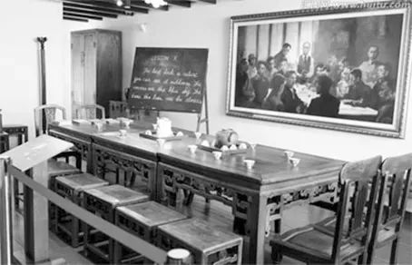

东南大学仪器科学与工程学院 寻迹梅庵实践团
官方微信
官方微博
寻 迹 梅 庵 ，薪 火 相 传
1924年1月，国民党第一次代表大会召开，会议通过了新的党章，改组了国民党组织，选举了有共产党员参加的新一届中国国民党中央领导机构，重新解释了三民主义，形成了"联俄、联共、扶助农工"等重大政策，实现了第一次国共合作。会议结束后，全国各地工人运动逐渐恢复，农民运动日益兴起，革命形势迅速高涨，形成了以广州为中心的反对帝国主义和封建军阀的革命新局面。在国共合作建立后不到一年的时间内，国内的革命形势出现了新局面。
国民党一大会址
但随着革命形势的发展，国民党党内出现了左右分化。1924年6月，部分国民党党员向国民党中央执行委员会提出《弹劾共产党案》，声称共产党员加入国民党“于本党之生存发展，有重大妨害”。面对国民党右派的进攻，中共中央于7月1日发出党内通告，要求各级党组织坚决揭露国民党右派的反动活动。陈独秀、瞿秋白、蔡和森等人连续发表文章，痛斥国民党右派违背国民党一大政纲、破坏革命队伍内部团结的反动言行。
1924年的瞿秋白（左）、陈独秀（右）
在这样的大环境下，为了总结国共合作一年来的经验，加强对革命运动的领导，回答党所面临的许多新问题，1925年1月11日至22日，中国共产党第四次全国代表大会在上海召开。出席大会的有陈独秀、蔡和森、瞿秋白、谭平山、周恩来、彭述之、张太雷、陈潭秋、李维汉、李立三、王荷波、项英、向警予等20人，代表着全国994名党员。共产国际代表维经斯基参加了大会。陈独秀代表第三届中央执行委员会作了工作报告。
中共四大旧址建筑模型
中共四大会场再现
大会围绕当前的中心工作，通过了《对于民族革命运动之议决案》等11个议决案，并选出了新的中央执行委员会。新当选的中央执行委员共9人：陈独秀、李大钊、蔡和森、张国焘、项英、瞿秋白、彭述之、谭平山、李维汉；候补执行委员5人：邓培、王荷波、罗章龙、张太雷、朱锦堂。在随后举行的中央执行委员会第一次会议上，陈独秀当选为中央总书记兼中央组织部主任，彭述之任中央宣传部主任，张国焘任中央工农部主任，蔡和森、瞿秋白任中央宣传部委员，以上5人组成中央局。
中共四大与会代表
中共四大最重要的贡献是第一次明确提出了无产阶级在民主革命中的领导权和工农联盟问题。《对于民族革命运动之议决案》明确指出：“无产阶级的政党应该知道无产阶级参加民族运动，不是附属资产阶级而参加，乃以自己阶级独立的地位与目的参加”。“无产阶级是最有革命性的阶级”。所以，民主革命“必须最革命的无产阶级有力的参加，并且取得领导的地位，才能够得到胜利”。关于工农联盟，《对于农民运动的议决案》阐明了农民是无产阶级同盟军的原理，强调了农民在中国民族革命中的重要地位，指出：如果不发动农民起来斗争，无产阶级的领导地位和中国革命的成功是不可能取得的。此外，大会对中国民主革命的内容作了较完整的规定，指出在“反对国际帝国主义”的同时，既要“反对封建的军阀政治”，又要“反对封建的经济关系”，这表明，此时党已把新民主主义革命基本思想的要点提出来了。
中共四大宣言和决议案
中共四大提出了无产阶级领导权和农民同盟军问题，总结了党成立以来特别是国共合作一年来的经验教训，重新审定国共合作以来的政策和策略，表明党在革命理论和革命策略上有了重大突破，初步形成了新民主主义革命的基本思想，为随后出现的革命新高潮做了思想上、理论上和政策上的准备，此后，全国的革命形势迅速发展，工人运动风起云涌，农民运动轰轰烈烈，大革命的高潮来临了。但大会对于怎样取得领导权、怎样实现工农联盟的问题，缺乏具体明确的主张，没有认识到解决农民土地问题、革命武装和革命政权的重要性。